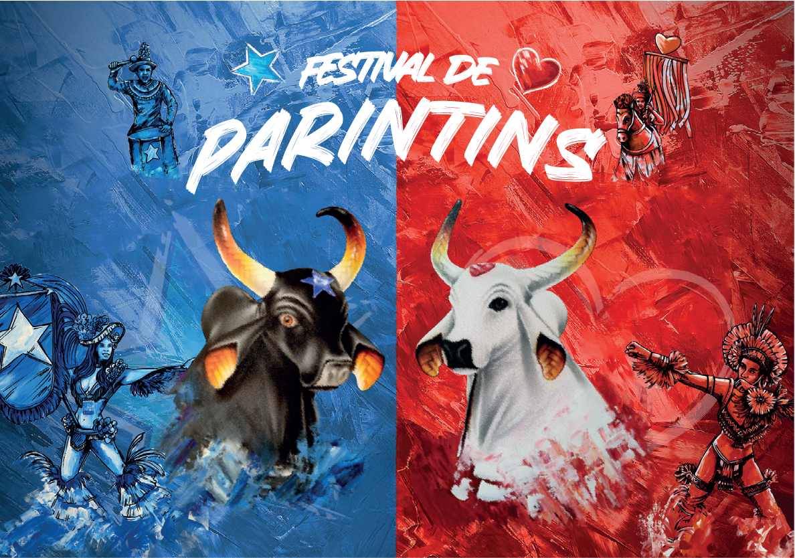

Imagens
Pôster do Festival

É uma festa popular brasileira criada no município de Parintins,em 1965, no interior do estado do Amazonas.O festival celebra a cultura cablocla,indígena e quilombola da região norte do país,sendo reconhecido como Patrimônio Cultural do Brasil pelo IPHAN. O símbolo principal do festival são os Boi-Bumbás Garantido e Caprichoso, duas figuras folclóricas centenárias que dividem a cidade em duas cores, vermelho e azul, e que durante suas apresentações no último fim de semana de junho, competem para ver quem será o campeão da edição do Festival Folclórico de Parintins.
Pôster do Festival
